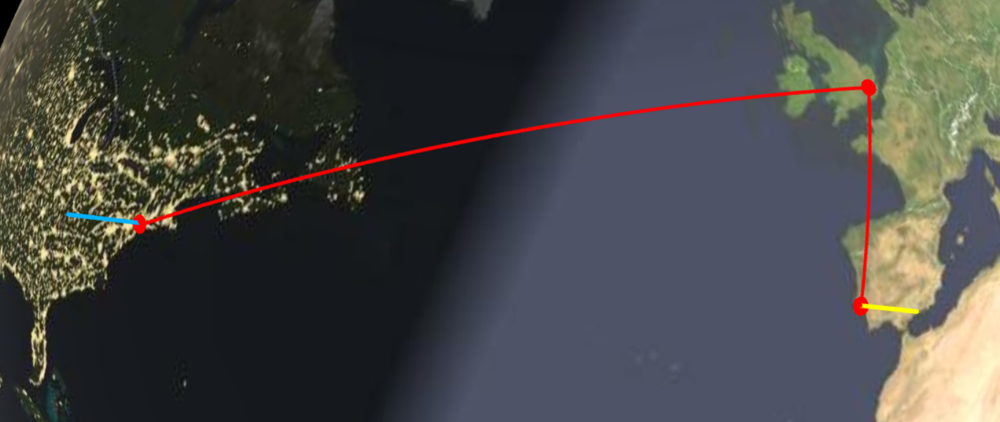
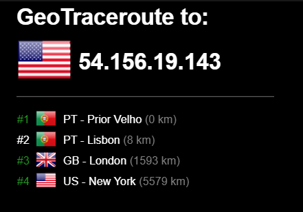
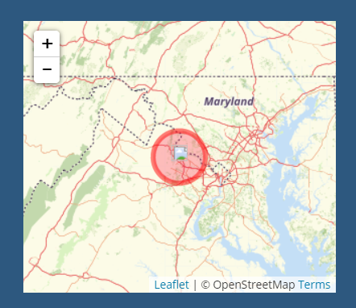
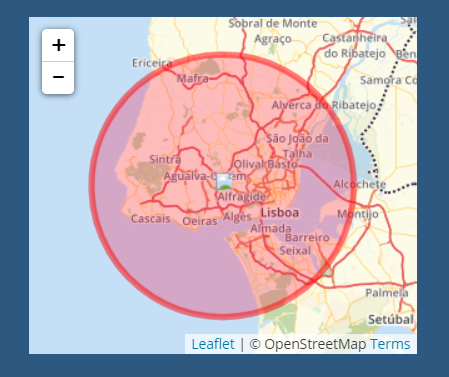
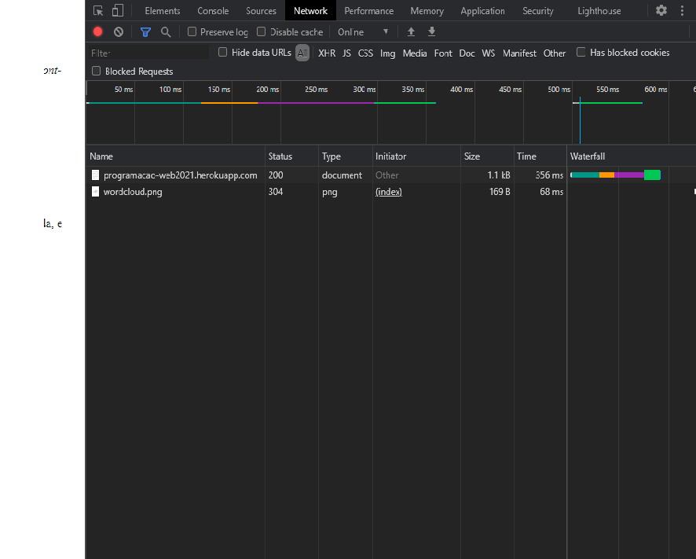

- 2.Conhecer a Internet
- IP PC - 95.95.231.68
- IP Heroko - 54.156.19.143
- 3.Inspect
- Apos inspecionar o codigo fonte foi possivel observar o pretendido
- Ao inspecionar o headers obtemos General, Response Headers e Request Headers
- O preview mostra o conteudo
- O Timing tem Resorce Scheduling, Connection start e Request/Response




